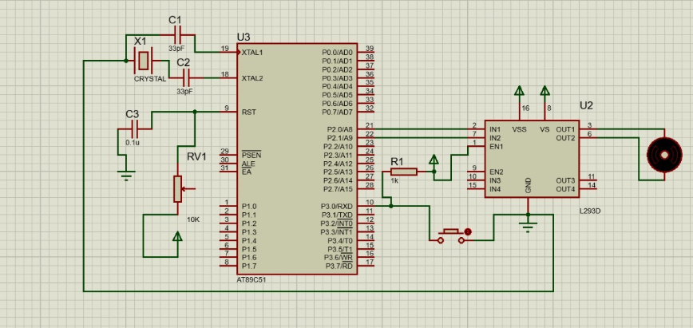
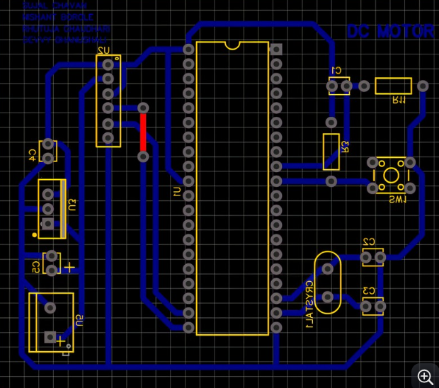
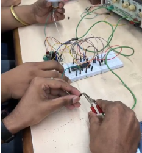

8051 Based DC Motor Controller
A microcontroller-based DC motor controller built around an AT89C51/8051 architecture and an L293D motor-driver stage, with schematic, PCB and physical prototype development.
Project overview
The project demonstrates a complete small embedded motor-control system starting from circuit design and simulation/schematic work and progressing to PCB routing and physical hardware assembly.
The AT89C51 acts as the main microcontroller. Its output/control lines are interfaced to an L293D motor-driver IC, which provides the current-driving stage required to operate the DC motor. The clock/reset and supporting components are included around the microcontroller so the controller can run as a standalone embedded circuit.
The supplied images show the project at multiple stages: the circuit schematic, PCB layout/routing, hands-on prototype wiring and the assembled motor/robot platform.
System architecture & technical focus
MICROCONTROLLER
AT89C51/8051 used as the main embedded controller.
MOTOR DRIVER
L293D used as the interface between the low-power microcontroller outputs and the DC motor.
CLOCK & RESET
Crystal oscillator components and reset circuitry provide the basic operating support for the 8051.
PCB & PROTOTYPE
The design was taken from schematic to PCB routing and then to a physical prototype.
Work performed
- Designed the 8051-based DC motor controller circuit.
- Created the schematic showing the AT89C51, crystal oscillator, reset network, control inputs and L293D motor-driver interface.
- Connected microcontroller output lines to the L293D input stage for motor control.
- Designed the PCB routing for the controller and motor-driver circuit.
- Built and tested the circuit using a physical prototype and breadboard wiring.
- Debugged the hardware connections and verified motor-control behaviour.
- Integrated the controller into a physical motor/robot platform for practical testing.
- Used the project to understand the complete path from microcontroller pin-level control to a powered DC motor.
Technology stack
Project media


